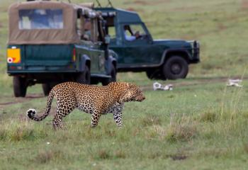

Africa is the second most populated continent, with it's largest country being Algeria.
Also Botswana is one of the best countries to go to in Africa for a safari.
They have so much wild life that you can see, so going on a safari would be really interesting.
Also to just be able to explore, taste different foods, learn about their lifestyle, and so much more.
https://www.zicasso.com/sites/default/files/styles/image_style_tours_grid/public/photos/tour/africa_kenya_masai_mara_leopard_with_safari_cars_2.jpg
https://upload.wikimedia.org/wikipedia/commons/thumb/a/af/Flag_of_South_Africa.svg/2000px-Flag_of_South_Africa.svg.png
https://img.clipartxtras.com/c7a15886667f3f4727068057ae3d3dd8_png-globe-clipart-transparent-background_2070-2062.png